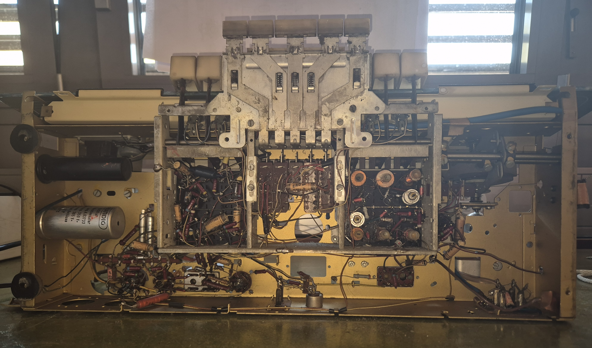
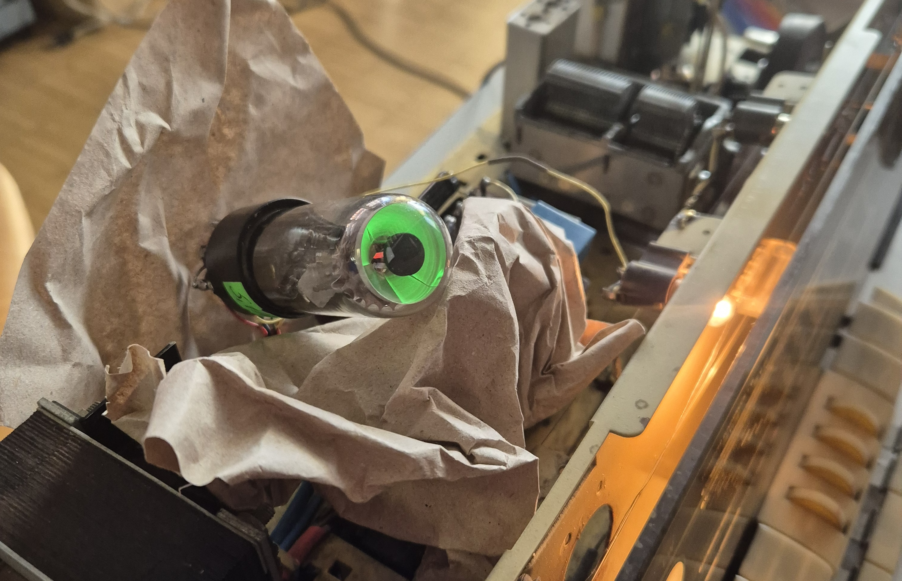

After finding this 1958 Grundig 4088 radio in an old apartment, it sat around for quite some time as I was a bit scared to start working on it. I knew it would be a big project, but one of my professors convinced me to try and repair it, and so I did.
The radio would not turn on at all, so I opened it up carefully and replaced all the internal capacitors, as they were most likely all dried out. I replaced them all with ceramics, as these generally last forever. I also replaced some of the internal wires as the insulation was crumbling off. I tried plugging it in but no luck. After probing around, my professor helped me find the issue—it was simply one capacitor that I had wired the wrong way around. After fixing this, the radio sprang to life, and we were able to hear some stations, but there was still a lot of work to be done.

I sanded and cleaned all the contacts of the vacuum tubes, then I took apart all of the plastic pieces that were thoroughly cleaned. After that, I meticulously cleaned and lubricated every mechanical part of the radio, replaced the rubber on one of the clutches, fixed one of the broken cables that moved the resistance, and replaced the front lightbulbs.
One of the biggest jobs was getting the magic eye tube on the front working. Instead of replacing it with an original EM34, I decided to use a Soviet copy called the 6E5C, as they are a lot cheaper. However, it is not a drop-in replacement. The pinout is not the same, and the 6E5C has only a single anode, as opposed to the EM34's two. Here is a thread on how to correctly wire it up, and the resistance values also needed to be changed.

After finishing the repair, I retrofitted it with one of these TP-Link HA-100 Bluetooth receiver. I had to modify the cable to make it a mono signal and match the correct input impedance. I then drilled a small hole into the back of the radio and added a switch. I hooked up the phono output to the switch in such a way that when the switch is on, the radio can play from Bluetooth, and when it's off, the phono is open for another device. This does not impair the radio's original functionality at all.